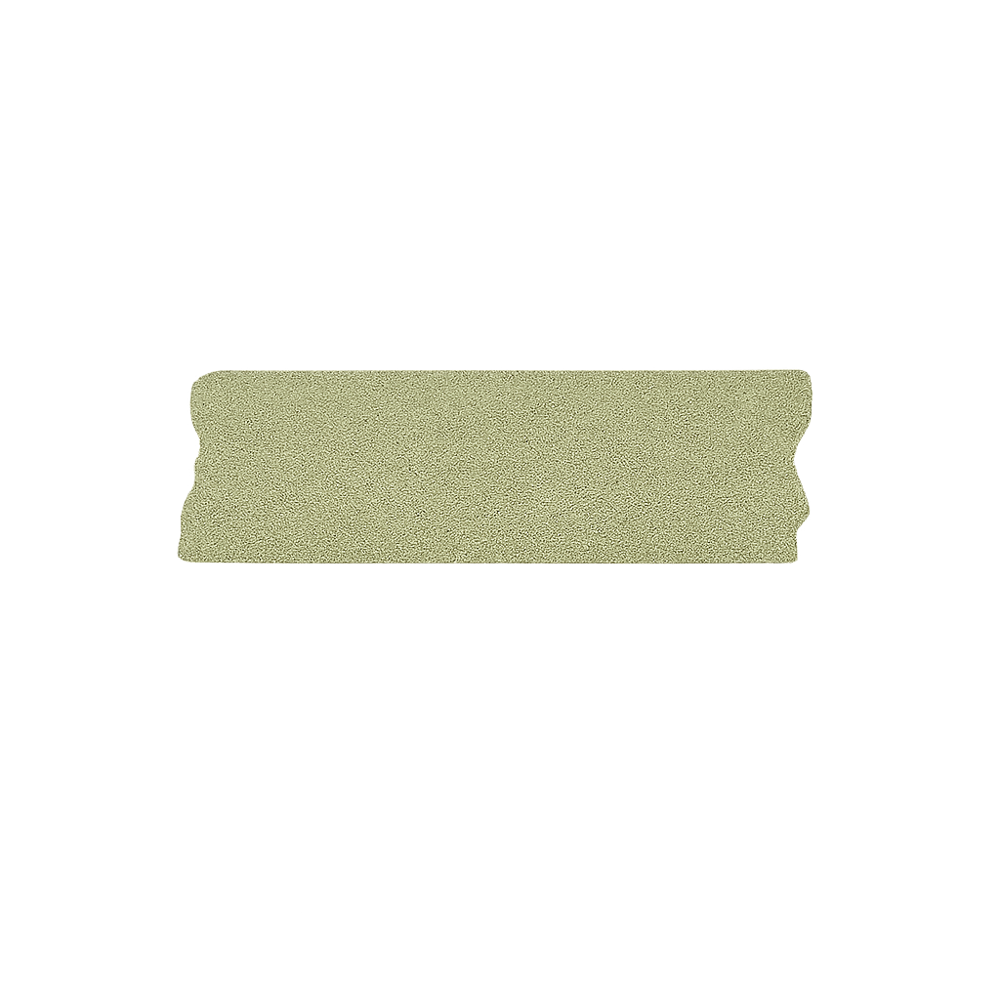

Kyoto

me staring into the void until I find a good pic

morning matchas 🍵

I spent the morning walking Philosopher’s Path under soft rain.
I spent the morning walking Philosopher’s Path under soft rain.